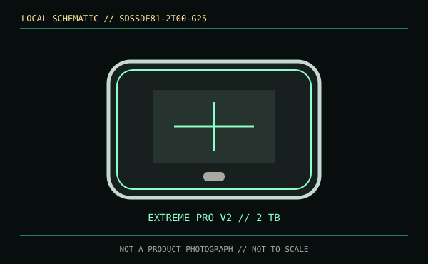

[ REMOVABLE MEDIA // MODEL-SPECIFIC RECORD ]
SanDisk Extreme PRO Portable SSD V2 2 TB (SDSSDE81-2T00-G25)
A factory-assembled 2 TB portable SSD identified as model SDSSDE81; it is not the standard Extreme Portable SSD SDSSDE61 or a separately sold SSD enclosure.

IDENTIFICATION: V2 performance figures and USB 3.2 Gen 2x2 behavior apply to the SDSSDE81 generation. Match full SKU, capacity and revision on the label.
Format, capacity and compatibility
| Product / part ID | SanDisk Extreme PRO Portable SSD V2, 2 TB, SDSSDE81-2T00-G25 |
|---|---|
| Interface | USB 3.2 Gen 2x2 (20 Gb/s) over USB Type-C; backward compatible with supported USB hosts at their negotiated rates. |
| Performance | Manufacturer maximum up to 2,000 MB/s read and 2,000 MB/s write. Full rated throughput requires a Gen 2x2-capable host; many USB-C ports (including common 10 Gb/s hosts) will run slower. |
| NAND / endurance | Published consumer specifications cited here do not state NAND type or TBW endurance for this external product. |
| Compatibility | USB data-capable Windows/macOS host with supported filesystem. Verify the actual port controller and cable support Gen 2x2; a Type-C connector or Thunderbolt port alone is not proof of that USB mode. |
| Product caveat | Ingress and drop ratings are conditional enclosure tests for the identified revision. They do not imply water protection with open ports or archival durability, and should not be confused with SSD write endurance. |
Handling and preservation
Use an appropriate high-speed data cable, avoid sustained heat and safely eject. Keep model and firmware information with the drive, and maintain independently verified copies. A portable SSD is a transfer/work drive rather than a sole preservation copy; periodic checksum and restore checks are recommended.
Sources and standards
- SanDisk / Western Digital — Extreme PRO Portable SSD V2 product pageManufacturer family and SKU configuration.
- SanDisk / Western Digital — Extreme PRO Portable SSD product supportManufacturer support and documentation for the SDSSDE81 family.
- USB-IF — USB 3.2 specifications overviewUSB 3.2 link-generation reference.